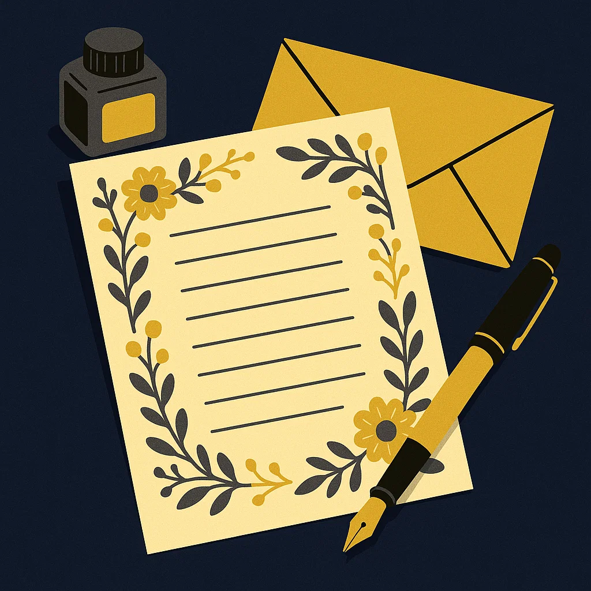

안녕 The Flower씨. 나 같은 도야지에게 자비가 없는 유월이 돌아왔어. 나는 괴롭지만 수족냉증인 네가 그나마 안식을 갖는 계절이니, 즐겁게 받아들이도록 하마.
선물은 코끼리타월과 라마등산모자, 거기서 한 개 더 준비해야했는데 못내 아쉽다. 개발자 명함이나 여름 잠옷은 우리가 함께 또 골라보도록 하자. 내가 정보를 처리한 다음에 네가 휴가를 갈 수 있으니, 또 같이 즐거운 데이트를 해보고 싶구나.
작년과 올해의 우리는 각자 대역전극을 만들어낸 주인공들이었지만, 그렇다고 특별하게 삶이 바뀌진 않더라. 다만 이 일상을 제대로 가꾸어 나가고, 그 와중에 틈틈이 자아실현을 한다면 주인공으로서의 수명도 길어질 거라 생각해.
짬 나면 같이 프로젝트하고 싶은데 너는 너무 바빠! 그 와중에 부업도 하고 본가도 가고 친구도 만나고 할 거 다 하는 걸 보니, 대견하지만 퍼질까봐 걱정된다. 쉬엄쉬엄 하거라.
함께 맞이하는 여름의 시간을 정답고 행복하게 보내자. 눈감으면 영사기가 쏴주는 것처럼 생생한 추억으로 남도록."후회 없는 여름이었다."라고 기억이 될 26년이 되길 바라.
Goat Shit이 2026년 6월 23일에 작성.
안녕 The Flower씨. 북구의 겨울와 적도의 여름처럼 두 계절만 남아버린 대한민국의 11월이야. 올해도 무사히 기념일을 같이 보낼
수 있게 되어 영광이야. 슬슬 나이를 먹어가는 건지 싸우는 횟수도 줄어들었고, 그 중에서도 총력전의 비중이 많이 줄어든 것이 다행이라고 생각해.
마침 빼빼로데이가 겹쳐있어서, 초콜릿 세상에서 제일 싫어하는 네가 그나마 좋아하는 빠빠리로쉐와 청포도알을 준비했어. 올해는 작년보다 덜
풍성하지만 소소하게 기념일을 보내보자.
네가 여름의 나라로 떠나있는 동안, 나는 취업 지원과 프로젝트를 계속 병행할 계획이야. 네가 없는 동안에도 매우 바쁠 것이니, 우리가
다시 만나는 시간은 그리 멀지 않을 거야. (네가 극혐하든 말든 간에 우린 다시 보게 될 걸!)
벌써 내년이 기대가 된다. 너는 오프라인에서 한국어를 가르치고, 나는 온라인에서 한국 문화를 배포하는 서비스를 진행하게 될지도
모르겠어.
우리 아빠가 공대 나왔다가 어학으로 빠진 것처럼, 나는 어문학을 배웠다가 공학으로 전향하게 되었잖아? 미래는 참 알 수가 없다.
알 수 없는 미래 조차도 즐기자. Even Better. 함께 있으면 뭐든 다 잘 되진 않아도 재미는 있을 거야.
여름의 나라에서 쾌차하고 한국의 새해 중에는 다시 볼 수 있기를 희망해. 건강하겠다고 약속하고, 자빠지지 않겠다고 맹세해. 그럼 수고바위.
Goat Shit이 2025년 11월 9일에 작성.
안녕 The Flower씨 :) 매년 6월이 되면 세상에 네가 찾아온 그 날을 기다리게 돼. 너에게 여름이 싱그러움과 삶의 동력을 온전히
가져다주는 것처럼, 너는 나에게 살아가는
이유와 목적 그 자체가 되어가는 것 같아. 그 이름에 담긴 언령처럼 세상을 화하게 하는 옥석 같은 사람으로 있어줘서 고맙다.
을지로 펍에서 어린왕자의 사막여우처럼 길들여진 것 같다는 말을 한 것 같은데, 편지를 쓰면서 ‘가장 중요한 건 눈에 보이지 않는다.’는
사막여우의 또 다른 명대사를 읽게 되었어.
여름이란 개념이 눈에 보이지 않는 대신 높은 온도와 습도, 먹거리와 볼거리로 “여름이 왔구나?”를 인지할 수 있는 것처럼, 파크맨션에 파견 가있는 너 또한 내 눈에 보이지 않지만
언제나 소중하게 곁에 있는 느낌이 든다. 그 소중함을 가끔 잊어 너와 싸우는 걸 생각하면, 사실 어린왕자에서도 왕자와 여우가 맞짱 뜨는 장면이 있었는데 심의 상 삭제한 게
아닐까라는 망상이 들곤 한다.
올해의 절반이 지나갔지만, 실제 우리가 함께한 시간은 3주도 채 안 되는 것 같아. 일주일에 육일 정도 붙어있던 옛날을 생각해보면
격세지감이 느껴져. 만났을 때 하루를 더 소중하게
보내는 게 좋겠어. 그때의 우리가 함께 있을 때 하루 같은 육일을 보냈다면, 요즘의 우리는 한 달 같은 하루를 보낸다고 생각하자. 넌 별로 아쉬워할 것 같지 않지만 난 더 자주
보고 싶거든요 :)
나는 이번 교육이 끝나면 쌀쌀한 겨울이 되고, 한 살을 더 먹어버릴 것 같아. 내가 태어난 겨울은 족냉증 속성이 있는 너에겐 힘든
시간이겠지만, 생명이 무럭무럭 자라나는
여름만큼이나 좋은 점이 많아. 우선 길거리 음식! 붕어빵과 어묵이 굉장해지는 시즌이지. 또한 네가 좋아하는 평양냉면을 햇메밀로 신선하게 먹을 수 있어. 그리고 추워서 서로 붙어있고
싶어지는 온도야. 사람들과 붙어있어도 불쾌지수가 높지 않아 사랑스러운 계절인 것 같아.
여름과 겨울이 극과 극이지만 각자의 매력이 있는 것처럼, 우리가 서로의 사랑스러운 점을 계속 찾아내고, 아껴준다면 앞으로도 좋은 시간을
보낼 수 있을 거야. (넌 여름에 태어나서
F인 느낌이고 나는 겨울에 태어나서 T인 느낌이랄까?) Fwa성에서 태어난 너와 To성에서 태어난 나는 앞으로도 다른 점이 많겠지만, 틀린 점은 없으니까 잘 부탁해!
내가 직접 디자인한 페이지에서 This Flower의 생일을 축하할 수 있어 기쁘다. 펠트브로치 사건 때 느꼈겠지만 나는 손으로 뭔가를
만드는 것에는 재주와 흥미가 없어. 하지만
가상의 세상에서 뭔가를 만드는 건 재미있네. 앞으로 배울 컴퓨터 언어들을 사용해서 매년 이 맘 때마다 코드를 개선하고 페이지를 추가해보는 것도 좋을 것 같아. 물론 디스플레이는
차갑고 깡통 같은 컴퓨터가 만들어주지만, 당신을 사랑하는 건 그 너머에 있는 나라는 걸 기억해둬.
당신과 공통점은 별로 없지만 당신이 보고 싶고 그리운
Goat Shit이 2025년 6월 14일에 작성.
